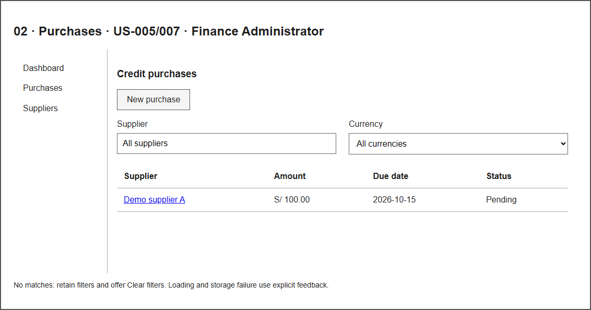
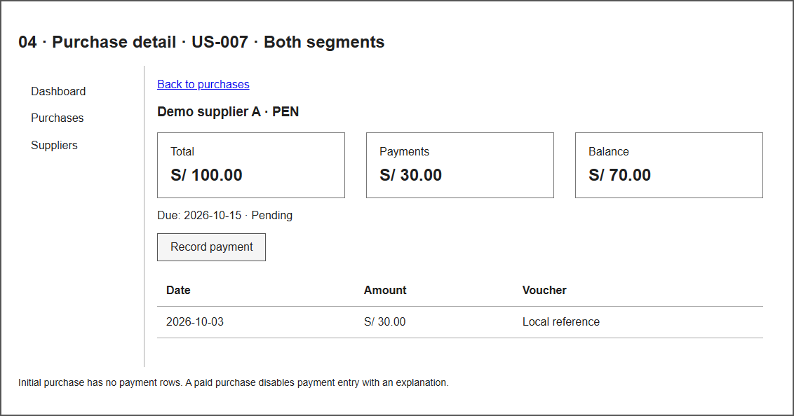
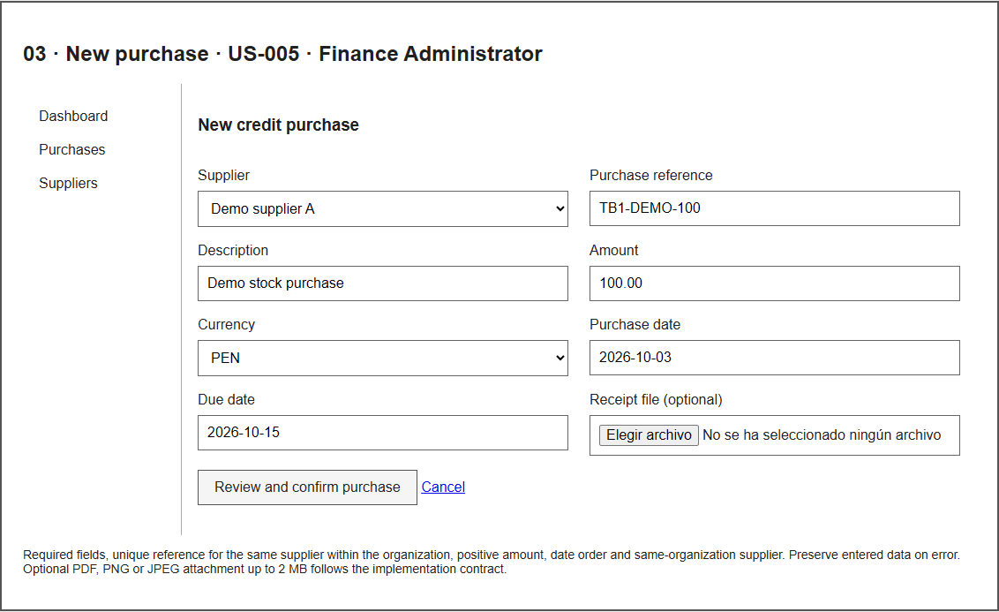
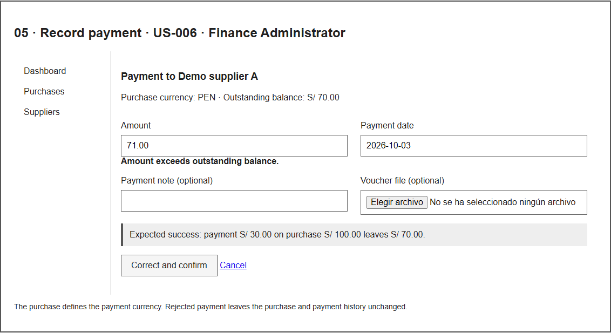

Actor: responsable de finanzas de la MYPE. Historias US-004/005/006/007. Pantallas propuestas y rutas contrastadas con el frontend Vue de TB1. Las imágenes son referencias de composición: el texto de cada paso define el estado del recorrido, que puede diferir de los valores de ejemplo de la imagen.
Alcance: organización de demostración fija y almacenamiento local del navegador. No se representa autenticación, permisos ni llamadas a una API desplegada. Pendiente de trasladar este wireflow a la herramienta de diseño del equipo.

Filtrar por texto, proveedor, moneda, estado o rango de vencimiento; elegir una compra.

Consultar saldo, fecha, comprobante y movimientos. Volver a Compras.
| Escenario | Estado visible | Retorno o recuperación |
|---|---|---|
| CON-02 | Los filtros no encuentran coincidencias. | Mostrar Sin resultados. Limpiar o cambiar filtros en Compras. |
| CON-03 | No hay compras en el espacio local. | Mostrar lista vacía y acceso a Nueva compra. |
| CON-04 | El enlace apunta a una compra inexistente. | Mostrar Compra no encontrada y enlace a Compras. |
| CON-05 | Falla el acceso al almacenamiento o su contenido está corrupto. | Mostrar alerta global y ocultar listado/formulario. Reintentar carga o solicitar restablecimiento. El diálogo advierte que se reemplazan los datos por ejemplos; Cancelar mantiene el estado anterior. Si el restablecimiento falla, conservar diálogo con el error y permitir reintento. |

Completar datos. Revisar abre un diálogo; Confirmar revalida y guarda.
| Escenario | Disparador | Respuesta y retorno |
|---|---|---|
| COMP-02 | Proveedor ajeno o no seleccionado; importe inválido; moneda distinta de PEN/USD; referencia o descripción inválida; referencia duplicada para el mismo proveedor y organización; fechas inválidas; archivo inválido o ilegible. | Mantener formulario e información, mostrar error por campo y enfocar el primer error. Corregir y volver a Revisar. La duplicidad ignora mayúsculas/minúsculas; no bloquea una referencia de otro proveedor. |
| COMP-03 | Cancelar desde el formulario o volver a Compras. | Volver al listado sin registrar ni conservar un borrador persistente. |
| COMP-04 | Cancelar o cerrar el diálogo antes de confirmar. | Volver al mismo formulario conservando los campos y el archivo seleccionado. No registrar la compra. |
| COMP-05 | Al confirmar, falla el almacenamiento, cambia la revisión local o la nueva validación rechaza los datos. | Mantener diálogo con explicación y conservar entrada. Reintentar Confirmar; para modificar datos, cerrar el diálogo y corregir el formulario. No presentar el registro como exitoso. |
Reglas de validación: referencia de 2 a 80 caracteres y descripción de 3 a 200; importe positivo con hasta dos decimales dentro del límite admitido; fecha de compra no futura y vencimiento no anterior a ella. Archivo opcional PDF, PNG o JPEG de hasta 2 MB.

La moneda se hereda de la compra. En ABO-01 se ingresa un importe válido, se revisa el saldo posterior y se confirma. La imagen de PEN 71 frente a saldo 70 representa ABO-04; se usa aquí solo como referencia de composición.
| Escenario | Disparador | Respuesta y retorno |
|---|---|---|
| ABO-02 | La compra de la ruta no existe. | Mostrar Compra no encontrada y ofrecer volver a Compras. |
| ABO-03 | Compra pagada: saldo cero. | En el detalle se oculta Registrar abono y se muestra compra pagada. En una ruta directa al formulario se muestra la explicación y se deshabilita Revisar; es posible volver al detalle. |
| ABO-04 | Importe no positivo, inválido o superior al saldo; fecha anterior a la compra o futura; nota mayor de 200 caracteres; archivo inválido o ilegible. | Mantener entrada, mostrar errores y enfocar primer campo. No añadir un movimiento. Corregir y volver a Revisar. Con saldo PEN 70, PEN 71 se rechaza. |
| ABO-05 | Cancelar desde el formulario. | Volver al detalle sin registrar y sin conservar un borrador persistente. |
| ABO-06 | Cancelar o cerrar el diálogo de revisión. | Volver al formulario con entrada y archivo conservados, sin añadir un movimiento. |
| ABO-07 | Al confirmar falla la escritura, cambia la revisión local o la revalidación del saldo/compra rechaza el abono. | Mantener diálogo y entrada con explicación. Reintentar Confirmar o cerrar para corregir. La operación vuelve a leer los datos; no permite un saldo negativo ni presenta el abono como exitoso. |
Confirmación: durante el guardado se deshabilita la confirmación repetida y el cierre del diálogo. Los escenarios de error documentan estados disponibles; no constituyen nuevas ejecuciones de prueba. Ver todas las pantallas propuestas.